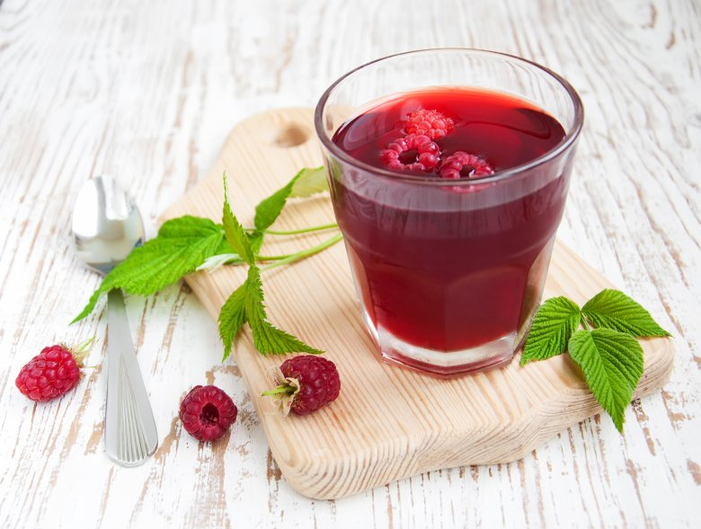

Himbeerbowle

1 Pck. Himbeeren, TK
1 Flasche Sekt, trockener
2 Flaschen Bier (Weißbier)
½ Flasche Sirup (Himbeersirup)
50 g Puderzucker
Zunächst das Weißbier in eine große Schale schütten (Vorsicht, es schäumt!) Dann den Himbeersirup beigeben, anschließend den Sekt.
Zum Schluss die Himbeeren gefroren(!) dazu geben und nach Geschmack mit Puderzucker süßen.
Wenn die Bowle mal ein, zwei Stunden gestanden hat und durchgezogen ist, schmeckt sie super lecker und nicht zu sehr nach Alkohol!
Außerdem geht es sehr schnell und ist kostengünstig!